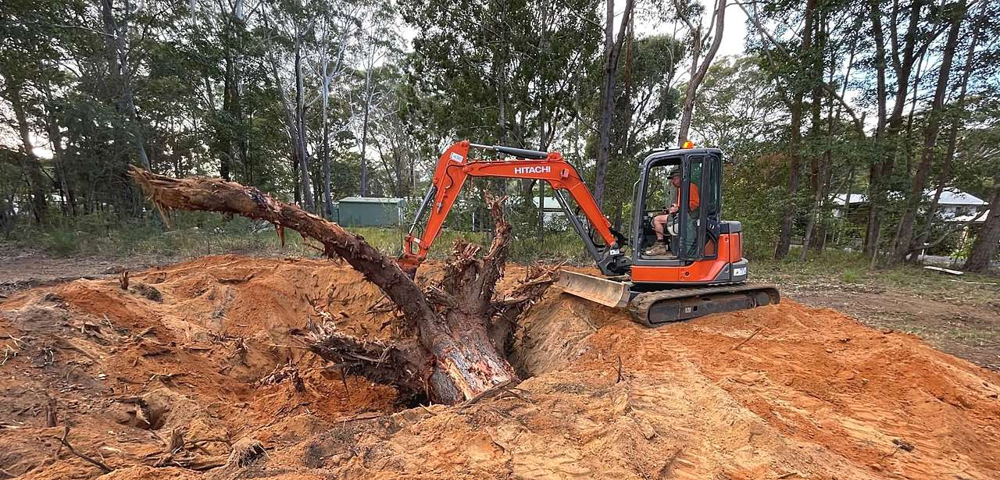

Call-up
Ring or email the lot, the job and when the site is free. We turn it around fast so the program is not waiting.
New Beith, Queensland
Spoil off the lot, road base and crossovers in, slab and final cleans done. We work direct with site supervisors so the build program keeps moving.
Trusted by volume builders across SEQ

Services
The list is the work supervisors actually call up. Spoil, access, trenches, screw piers, plant with an operator, and the cleans.
For builders
Ring or email the lot, the job and when the site is free. We turn it around fast so the program is not waiting.
We work to your purchase order and builder portals, including BusinessCraft.
Photos and a docket from our own jobs system, sent after every job.
How we work with your site team
Service area
Brisbane south, Logan, Ipswich, Lowood and the Somerset growth estates, the Scenic Rim edge, and the northern Gold Coast corridor.
Recent work
House sites we have been on. These are our photos, not stock.
Tell us the builder, who invoices go to, and which portal you use.